中村研ニュース（2009年度）
修士生１名と学部生４人が無事に修了・卒業［2010年3月］
3月25日（木）に修了式・卒業式が行なわれ，中村研も修士生１名と学部生４人が無事に修了・卒業しました。修了・卒業したメンバーは次の通りで，皆，引き続き進学などで大学に残ります。- 修士修了
- 藤井 景子
- 学部卒業
- あべ松 高志，遠藤 雄也，高木 雄太，八木澤 一穂
M2の藤井が日本物理学会年次大会で登壇［2010年3月］
3月20日（金）から23日（月）まで，日本物理学会第65回年次大会が岡山大学で開催され，23日に中村研の博士課程（前期）２年の藤井景子が登壇しました。 講演のタイトルは「液体キセノンの発光スペクトルの測定-3」で，本研究室が東京大学宇宙線研究所や高エネルギー加速器研究機構と進めている液体キセノンの発光スペクトル測定実験の最新結果について発表しました。村山が神岡鉱山でXMASS実験に参加［2010年3月］
3月15日（月）〜20日（土）に，大学院研究生の村山が，神岡鉱山で進められているXMASS実験の建設に参加しました。宇宙背景放射偏光観測に関するセミナーを実施［2010年3月］
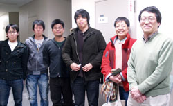3月11日（木）に，高エネルギー加速器研究機構の長谷川雅也氏（写真：右から３人目）と片山伸彦氏（写真：右から２人目）にお越し頂き，宇宙背景放射（CMB）偏光観測に関するセミナーを開きました。周到に用意された初学者にも易しいお話をして頂き，心より感謝申し上げます。学生にも相当なインパクトがあったようです。これをきっかけに，CMBについても勉強してGPUの応用を中心に何か貢献出来たら，と考えています。OBの横澤孝章氏が来訪［2010年3月］
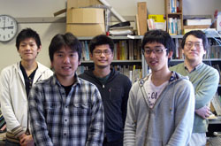3月11日（木）に，岐阜県神岡鉱山のスーパーカミオカンデで宇宙素粒子物理学の研究を行なっている中村研OBの横澤孝章氏（東大大学院理学系研究科在学，写真：前左）が修士論文の報告で来訪されました。今年４月からは博士課程に進学され，引き続きスーパーカミオカンデでの研究に携わるそうです。今後の一層の活躍を期待しています。村山が神岡鉱山でXMASS実験に参加［2010年3月］
3月1日（月）〜5日（金）に，大学院研究生の村山が，神岡鉱山で進められているXMASS実験の建設に参加しました。OBの富田賢典氏と宮本健司氏が来訪［2010年3月］
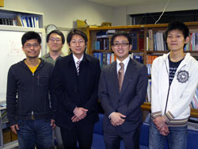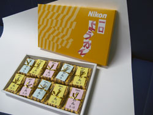3月4日（木）に中村研OBの富田賢典氏（写真：右から２人目）と宮本健司氏（写真：右から３人目，共に現・ニコン）が会社説明会のために来訪しました。後輩へのお土産に，知る人ぞ知る「ニコン羊羹」も戴きました。
大学院工学府博士課程（後期）にさらに１名合格［2010年2月］
2月26日（金）に，平成22年度横浜国立大学大学院工学府博士課程（後期）の２次募集で本研究室を志望した受験生の合格がさらに１名決定しました。これで計２名が博士課程（後期）に入ることになります。宇宙背景放射偏光観測に関するセミナーを予定［2010年2月］
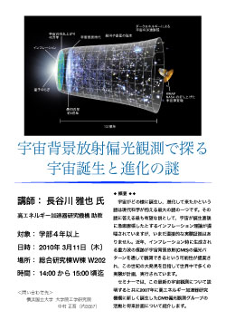3月11日（木）に，高エネルギー加速器研究機構の長谷川雅也氏にお越し頂き，総合研究棟Ｗ棟 Ｗ202で14:00から宇宙背景放射偏光観測に関するセミナーを開きます。セミナーのタイトルは次の通りで，学部４年位以上を対象にお願いしています。本学関係者を中心とする比較的内輪の集まりですが，興味のある方はご連絡下さい。 講師： 長谷川雅也氏（高エネルギー加速器研究機構 助教） 演題：「宇宙背景放射偏光観測で探る宇宙誕生と進化の謎」 ◆ 概要 ◆◆宇宙がどの様に誕生し，進化して来たかという謎は現代科学が抱える最大の謎の一つです。その謎に答える最も有望な説として，宇宙が誕生直後に急激膨張したとするインフレーション理論が提唱されていますが，いまだ直接的な実験証拠はありません。近年，インフレーション時に生成される重力波の痕跡が宇宙背景放射(CMB)の偏光パターンを通して観測できるという可能性が提案され，この世紀の大発見を目指して世界中で多くの実験が計画，実行されています。
セミナーでは，この最新の宇宙観測について説明すると共に2007年に高エネルギー加速器研究機構に新しく誕生したCMB偏光観測グループの活動と将来計画について紹介します。
学部４年の４人の学部生が卒論発表会で発表［2010年2月］
2月18日（木）に工学部知能物理工学科の卒論発表会が開かれ，中村研の４人の学部４年生が発表を行ないました。発表のタイトルは次の通りです。
◎あべ松 高志：「FPGAの放射線測定回路への応用」◎遠藤 雄也：「サリチル酸ナトリウムの蛍光寿命の測定」
◎高木 雄太：「X線CCDの詳細診断へのGPGPUの応用」
◎八木沢 一穂：「TDCの液体キセノン実験への応用」
共同研究者の平賀純子氏が東大に着任［2010年2月］
ここ数年にわたって中村研究室と共同研究を行っている平賀純子氏が理化学研究所から異動され，2月16日（火）付けで東京大学大学院理学系研究科附属ビッグバン宇宙国際研究センター（RESCEU）に助教として着任されました。学生共々，今後とも引き続き，平賀氏と共同研究を進めていくつもりです。大学院工学府博士課程（後期）に１名合格［2010年2月］
2月15日（月）に，平成22年度横浜国立大学大学院工学府博士課程（後期）の２次募集で本研究室を志望した受験生の合格が１名決定しました。なお，最終合格者数は2月26日（金）に明らかになります。M2の藤井が修論発表会で発表［2010年2月］
2月10日（水）に工学府物理情報工学専攻物理工学コースの修論発表会が開かれ，中村研の博士課程前期２年の藤井が発表を行ないました。発表のタイトルは次の通りです。
◎藤井 景子：「液体キセノンの発光スペクトルの測定」OBの尾崎雄一氏が来訪［2010年2月］
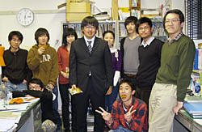2月4日（木）に中村研OBの尾崎雄一氏（現・コニカミノルタオプト）が会社説明会のために来訪しました。次年度の新４年生が研究室に来訪［2010年2月］
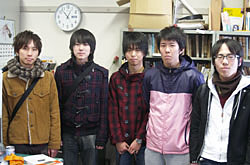2月3日（水）に，平成22年度に中村研の４年生として仮配属された５人の現３年生が研究室に訪れ，今後の進路や卒業研究の計画等について話をしました。M1の片田が高エネルギー加速器研究機構の放射光施設で新型コリメータの実験［2010年1月］
1月23日（土）〜28日（木）に，博士課程前期１年の片田が，つくばの高エネルギー加速器研究機構の放射光施設で，当研究室で開発したX線用の新型の微細コリメータの性能を検証する実験を行ないました。その結果，硬Ｘ線を直径約20μmまで細くすることができることを実証しました！我々は，さらに細い直径10μｍ以下のビームを目指しています。M2の藤井とM1の片倉が「放射線検出器とその応用」研究会で講演［2010年1月］
1月26日（火）〜28日（木）に第24回「放射線検出器とその応用」研究会（高エネルギー加速器研究機構放射線科学センターと応用物理学会・放射線分科会との共催）が高エネルギー加速器研究機構（つくば）で開催され，27日（水）と28日（木）に博士課程前期２年の藤井と同１年の片倉が発表を行ないました。藤井のタイトルは「液体キセノンの発光スペクトルの測定」で，本研究室が東京大学宇宙線研究所と高エネルギー加速器研究機構から支援を受けて研究を進めている液体キセノンの発光スペクトルの測定実験の初期結果と今後の予定について発表しました。
片倉のタイトルは「硬X線用CCD内部で形成される電荷雲形状の測定実験」で，本研究室が理化学研究所の平賀純子氏と共同で研究を進めているX線CCDの詳細診断に関する研究の最近の成果について発表しました。
次年度の新卒研生として５人が仮配属［2010年1月］
1月27日（水），中村研の平成22年度の新卒研生として5人が仮配属されました。M1の片倉と河野が神岡鉱山でXMASS検出器の建設シフトに参加［2010年1月］
1月20日（水）〜1月22日（金）に，博士課程前期１年の片倉と河野が，神岡鉱山で進められているXMASS検出器の建設シフトに参加しました。中村が神岡鉱山でXMASS検出器の建設シフトに参加［2010年1月］
1月16日（土）〜1月17日（日）に，中村が，神岡鉱山で進められているXMASS検出器の建設シフトに参加しました。中村宅で中村研の新年会［2010年1月］
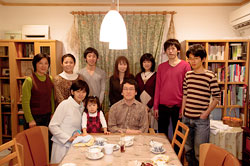1月10日（日）に，中村宅で中村研の新年会を開きました。在籍する学生と共に共同研究者も集って賑やかに時間を過ごしました。宇宙科学シンポジウムでＭ1の河野が発表［2010年1月］
1月7日（木）・8日（金）に宇宙航空研究開発機構で第10回宇宙科学シンポジウムが開かれ，8日の午後には博士課程前期１年の河野が「硬Ｘ線用CCD内部で形成される電荷雲形状の測定実験」というタイトルでポスター発表しました。特にGPUを用いることで達成した数値計算の数十倍の高速化には反響を頂きました。液体キセノンの発光スペクトル測定実験の最初のデータ取得を完了［2009年12月］
12月21日（月）から23日（水）にかけて，液体キセノンの発光スペクトル測定実験の最初のデータを取得することに無事成功し，たいへん興味深いデータが得られました。公表出来るような確定的な波長値を出すには，まだ時間がかかると思いますが，その第一歩を歩み出すことが無事に出来たことを喜んでいます。これまで準備の段階から尽力してくれた学生の皆さん，そして全面的にご協力頂いている高エネルギー加速器研究機構と東京大学宇宙線研究所の先生方に深く感謝申し上げます。神岡鉱山でXMASS実験の検出器の建設が進行［2009年12月］
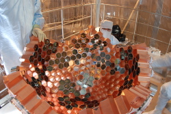現在，神岡鉱山でXMASS実験の検出器の建設が着々と進んでいます。写真は建設中の検出器中枢部で，六角柱形状の光電子増倍管が銅の構造体に取り付けられています。東京大学宇宙線研究所 共同利用研究成果発表会で講演［2009年12月］
12月18日（金），19日（土）に，東京大学宇宙線研究所の共同利用研究成果発表会が東京大学宇宙線研究所（柏キャンパス）で開催され，中村も成果の発表を依頼されて18日（金）の午後に講演を行ないました。講演のタイトルは「液体キセノンの発光スペクトルの研究」でした。内容は，最近の，藤井景子（M2），片田夕貴（M1），鳥越唯（M1）の仕事が中心となっています。新聞記事「宇宙の「暗黒物質」検出？．．．」についてー続報［2009年12月］
12月17日（木）に，中村研が参加するXMASS実験とはライバル関係にあるCDMS IIグループの発表がありました。 http://arxiv.org/abs/0912.3592http://cdms.berkeley.edu/ データでDark Matterの信号領域に２発あるという結果ですが，BGの見積りと考え合わせた結果，彼らも統計的に有意とは言っていません。
新しい光学セルで液体キセノンを貯めることに成功！［2009年12月］
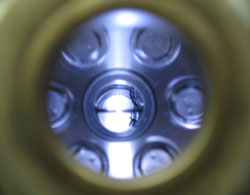12月16日（水）に，液体キセノンの発光スペクトルの測定のために設計製作した新しい光学セルに，液体キセノンを貯めることに成功しました。写真の中央に，半分ほど貯まった液体キセノンの液面が見えます。ご協力頂いているKEKの協力研究者の先生方に深く感謝申し上げます。さらに，年内に，発光スペクトルの初めての測定結果を出したいと考えています。新聞記事「宇宙の「暗黒物質」検出？ 本当ならノーベル賞級の発見」について［2009年12月］
12月11日（金），朝日新聞のニュースのWebに，表題の記事が載りました。中村研が参加するXMASS実験とはライバル関係にあるCDMS IIグループが何か記者会見するという噂は聞いていましたが，暗黒物質の有意な信号が得られたということなのかは，正式な発表を待ちたいと思います。その結果がいずれであっても，我々のXMASSがどのような結果を出すか，その重要性が一層増しました。 http://www.asahi.com/science/update/1211/TKY200912110276.html村山が神岡鉱山でXMASS実験に参加［2009年12月］
12月7日（月）〜11日（金）に，大学院研究生の村山が，神岡鉱山で進められているXMASS実験の建設に参加しました。GPUコンピューティングの推進［2009年12月］
今秋に，中村と多くの学生がGPU（Graphics Processing Unit）を用いた新しい並列計算技術CUDAやOpenCLのセミナーに多く参加しました。12月9日には，CUDAの使用できる計算機を合計４台に増強しました。今後とも，GPUを用いた技術を研究の様々な場面で応用していきたいと考えています。サマーチャレンジの参加者が来訪［2009年12月］
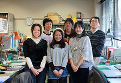12月4日に，今夏のサマーチャレンジで中村と院生がTAで担当した冬頭かおりさんが研究室に来訪され，元気な姿を見せてくれました。中村の出張サイエンスカフェの模様が全学のWebページで紹介されました［2009年11月］
9月30日（水）に神奈川県立横浜緑ヶ丘高等学校で中村が行なった出張サイエンスカフェの様子が，全学のWebで報告されました。 http://www.ynu.ac.jp/topics/topics_09_087.html高エネルギー加速器研究機構の放射光施設でX線CCDの実験［2009年11月］
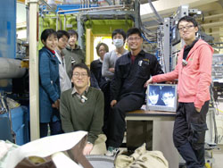11月20日（金）〜23日（月）に，昨年度に引き続き，つくばの高エネルギー加速器研究機構の放射光施設で，偏光した硬X線によるX線CCD素子内の電荷雲形状を測定する実験を行ないました。今回は，CCDの冷却系を改良したり，GPUを用いたCUDA技術を用いて迅速に解析を行うなどいくつもの改善を施しました。解析にはしばらく時間がかかりますが，我々が発明した超微細コリメータ（我々しか持っていない）でのみ可能な実験なので，年明けには面白い結果を発表できたらと考えています。中村が神岡鉱山で液体キセノンの循環試験に参加［2009年11月］
10月31〜11月1日に，中村が，神岡鉱山で進められているXMASS実験で，液体キセノンの循環試験に参加しました。大学院工学府の研究生が入学しました［2009年10月］
本年10月より半年間，中村研の卒業生の村山育子さんが，大学院工学府の研究生として中村研で学ぶことになりました。中村が出張サイエンスカフェで高校のセミナーの演壇に立ちました［2009年9月］
 9月30日（水）に神奈川県立横浜緑ヶ丘高等学校で，同校の緑高セミナーの一環として，中村が出張サイエンスカフェの演壇に立ちました。タイトルは，「この宇宙は何から出来ているか？ー 素粒子物理の世界 ー」ということで，素粒子物理の始まりから2008年にノーベル物理学賞を受賞された小林誠先生と益川敏英先生のお仕事まで駆け足で紹介しました。ひと通りの話の後には様々な質問が出て，答えることが難しい場面も度々でしたが，このようなやりとりを通じて，参加者の皆さんに少しでも素粒子物理学の面白さを感じてもらえたなら幸いです。
9月30日（水）に神奈川県立横浜緑ヶ丘高等学校で，同校の緑高セミナーの一環として，中村が出張サイエンスカフェの演壇に立ちました。タイトルは，「この宇宙は何から出来ているか？ー 素粒子物理の世界 ー」ということで，素粒子物理の始まりから2008年にノーベル物理学賞を受賞された小林誠先生と益川敏英先生のお仕事まで駆け足で紹介しました。ひと通りの話の後には様々な質問が出て，答えることが難しい場面も度々でしたが，このようなやりとりを通じて，参加者の皆さんに少しでも素粒子物理学の面白さを感じてもらえたなら幸いです。研究会「電離及びシンチレーション検出器の基礎物理と暗黒物質探索への応用」でＭ２の藤井が発表［2009年9月］
9月18日（金）に早稲田大学理工学術院総合研究所理工学研究所で研究会「電離及びシンチレーション検出器の基礎物理と暗黒物質探索への応用」が開かれ，博士課程前期２年の藤井が「液体キセノンの発光スペクトルの測定計画」というタイトルでポスター発表しました。中村がKEKサマーチャレンジの演習4を担当しました［2009年8月］
第３回となる夏のKEKサマーチャレンジが8月20日から28日までKEKで行われ，中村が演習テーマの１つ，「最新のシンチレーション検出器を究めよう〜光る結晶と光る液体キセノン〜」(pdf)をKEKのスタッフの協力の下に担当しました。また，中村研の院生や卒業生もTAとして大活躍しました。本演習４の参加者６人の皆さんには毎日がハードながら充実した日々であったと信じています。なお，今年は横浜国大からサマーチャレンジへの応募者が無く大変残念でした。来年も同様のテーマで演習を行うと思いますので，２年生の皆さんは来年に奮ってご応募下さい！
大学院工学府博士課程（前期）の特別選抜で３名合格［2009年7月］
平成22年度横浜国立大学大学院工学府博士課程（前期）の特別選抜において，本研究室を志望する受験生が３名合格しました。※ 中村研究室Webサイトの仮移転に関するお知らせ ※［2009年6月］
2009年5月末に知能物理工学科のWebサーバーがハッカーの侵入を受けたため，中村研を含めた本学科のWebサーバーは一時的に停止しました。その結果，中村研のWebサイトは，今年度一杯は本サイトである，http://afs1.phys.ynu.ac.jp/
にて最新の情報を提供し，従来のサイトの
http://www.phys.ynu.ac.jp/labs/nakamura/
では，更新頻度がひと月に一度程度しか出来ないため，少し遅れてミラーサイトとして情報提供をして参ります。
以上，ご理解のほど，よろしくお願い申し上げます。
OBの宮本氏が来訪［2009年6月］
6月17日（水）に，中村研OBの宮本健司氏（現・ニコン）が当研究室に来訪されました。産総研の鍜島氏が来訪［2009年6月］
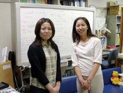6月10日（水）に，産総研計測標準研究部門の鍜島麻理子氏が10年以上振りに当研究室に来訪され，レーザーを用いた超高精度の計測に関するお話などを伺いました。鍜島氏は大学に入学したての学生の頃に，当研究室でN2ガスレーザーの製作を行なったことがあります。OBの宮本氏が来訪［2009年6月］
6月5日（金）に，今春に大学院を修了した中村研OBの宮本健司氏（現・ニコン）が修了後初めて当研究室に来訪され，元気な姿を見せました。中村が関東工学協会賞を受賞［2009年5月］
5月18日（月）に，中村が知能物理工学科の他の16名の教員と共に，平成20年度関東工学協会賞（業績賞）を受賞しました。OBの柏木氏が来訪［2009年5月］
5月15日（金）に，中村研OBの柏木茂氏（現・阪大）が当研究室に久し振りに来訪され，元気な姿を見せました。中村研OBの高橋純氏が本を出版［2009年5月］
中村研OBで現在情報教育分野で活躍されている富山大学人間発達科学部准教授の高橋純氏が，4月24日に共著で本を出版されました。書名は「すべての子どもがわかる授業づくりー教室でICTを使おうー」で，高陵社書店から出ています。OBの高橋氏およびOG村山氏が来訪［2009年5月］
5月8日（金）の夜に，中村研OBの高橋純氏（現・富山大）とOGの村山育子氏（現・日本TI）が当研究室に久し振りに来訪され，元気な姿を見せました。なお，OBの柏木茂氏（現・阪大）も来訪予定でしたが，やむを得ない急用のために来訪出来ずに残念でした。（高橋氏が絶好調であったため，写真を撮り忘れました。）中村がKEKサマーチャレンジの演習を担当します！［2009年5月］
第３回となる今夏の夏休みのKEKサマーチャレンジにおいて，中村が演習テーマの１つ，「最新のシンチレーション検出器を究めよう〜光る結晶と光る液体キセノン〜」(pdf)を担当することになりました。中村研の院生もTAとして活躍する予定です。大学３年生の皆さんは奮ってご応募下さい。中村研の同窓会のGoogleグループを設定［2009年4月］
最近に，中村研の同窓会のGoogleグループを設定しましたので，まだ参加されていない卒業生の方は中村までご連絡下さい。Ｘ線CCD用の新しい実験システムの構築を開始［2009年4月］
4月28日（火）に理研からX線CCD用の新しい小型チェンバーが届きました。今後，理研の平賀氏と共同で新たな実験システムの構築を進めます。また，今年度もKEKのPFでＸ線CCDによるＸ線の偏光の測定に挑戦したいと考えています。BP-1の特性の解明に向けて［2009年4月］
BP-1ガラスの特性の解明のため，新たなエッチングシステムを構築して実験を再開しようとしています。ご協力頂いている企業の皆様にはもう少しお時間を頂きたく存じます。OBの富田賢典氏が来訪［2009年4月］
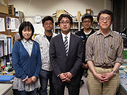4月8日（水）に，中村研OBの富田賢典氏（現・ニコン）が就職説明のために来訪しました。４人が大学院に進学し，４人が卒研配属しました［2009年4月］
2009年度がスタートし，前年度の４年生４人が大学院に進学し，新４年生４人が研究室に配属されました。- 片倉 勇人（M1）
- 片田 夕貴（M1）
- 河野 秀紀（M1）
- 鳥越 唯（M1）
- 棈松 高志（B4）
- 遠藤 雄也（B4）
- 高木 雄太（B4）
- 八木沢 一穂（B4）